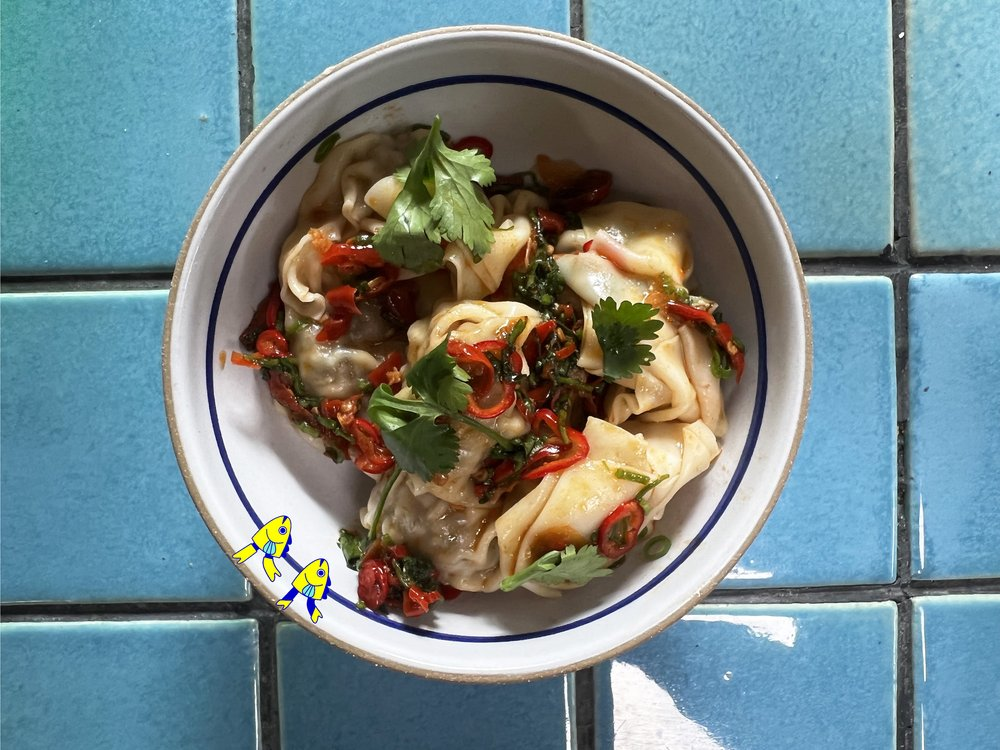

Spicy Rockfish & Pork Dumplings

Ingredients
- 1 Tiny Fish Co Rockfish in sweet soy sauce, drained, liquid reserved
- 4 oz pork,ground
- 0.5 tbsps ginger, microplaned
- 1 clove garlic, microplaned
- 2 green onions, sliced, greens and whites separated
- 1 egg, separated
- 0.25 tsps black peppercorn, toasted, cracked
- 0.25 tsps white peppercorn, toasted, cracked
- 0.25 tsps szechuan peppercorn, toasted, cracked
- 1 tsps hon daishi
- 4 tbsps your favorite chili condiment
- 2 sprig cilantro, pickled
- 20 won ton wrappers
How to make
- In a bowl, combine the rockfish, ground pork, ginger, garlic, whites of the green onions, egg yolk, peppercorns and hon dashi; mix the dumpling filling together well.
- Bring a large pot of water to a boil.
- Dot each of the corners of the won ton wrappers with egg white to help seal the dumplings; once the dumplings have been filled, boil for 4-6 minutes or until fully cooked.
- While the dumplings are cooking, mix together the reserved rockfish tin liquid, chili condiment, and green onion tops; when the dumplings are fully cooked, remove them from the boiling water, shake dry and immediately place into a bowl of chili. Toss the dumplings until fully coated, garnish with cilantro and serve immediately.